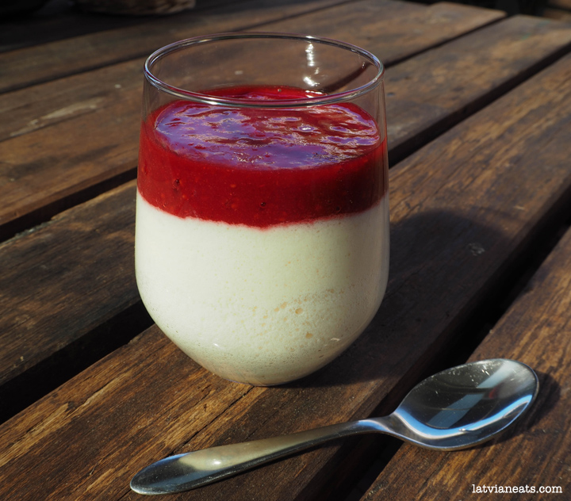

Buberts

Ingredients
- 4 eggs4 tbs white sugar
- 4 tbs white sugar
- 4 tbs plain flour
- 1 tsp vanilla extract
- 500ml milk
- 500g raspberries, strawberries or blackberries
- 2tbs sugar
Nutrition
Calories: 1415 kcal
Carbohydrates: 244 grams
Protein: 48 grams
Fat: 29 grams
Fiber: 30 grams
Instructions
- Step 1: Separate the eggs. Beat the egg whites until soft peaks form. Mix the yolks with sugar and vanilla extract.
- Step 2: Mix the flour with 100ml milk.
- Step 3: Heat the rest of the milk in a medium saucepan on low heat. Once the milk reaches boiling point, add the flour mixture and mix well with the milk. Be careful, as the milk may boil over or burn quite fast.
- Step 4: While constantly stirring, add egg yolk mixture. Then fold in whipped egg whites. Heat for further 1-2 minutes. Remove from the heat.
- Step 5: To prepare the berry sauce, blend the berries in a blender with 1-2 tablespoons of sugar.
- Step 6: To serve, place 4-5 heaped tablespoons of buberts in dessert bowls and pour over the sauce.
Enjoy your Buberts!
Note: Nutritional values are approximations.